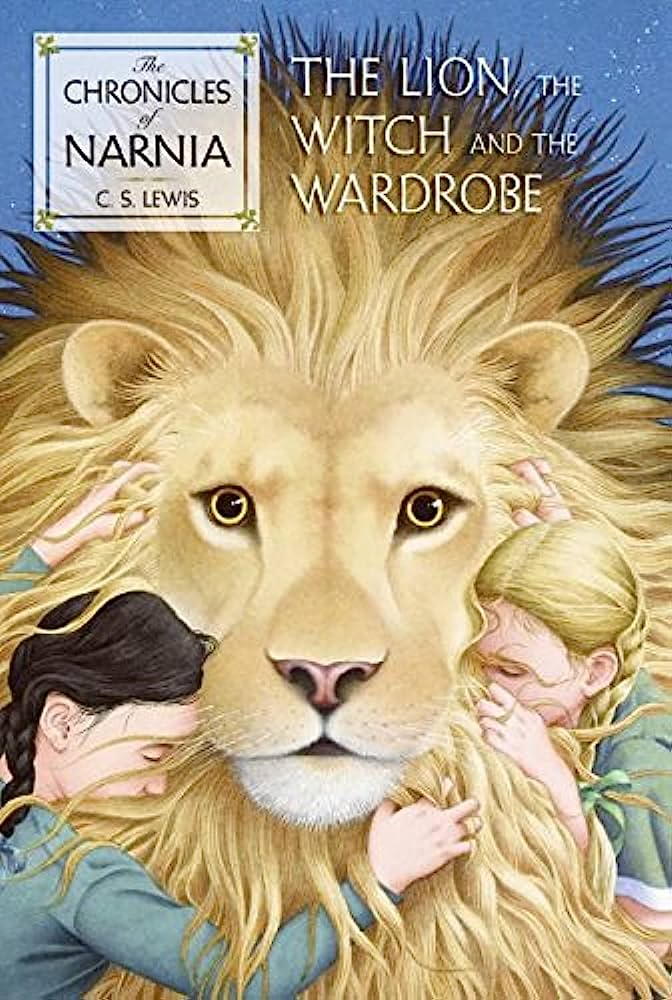

 "The Lion, The Witch And The Wardrobe" by C.S. Lewis is a captivating fantasy novel that has enchanted readers of all ages since its publication. This timeless tale takes readers on a magical journey into the land of Narnia, where they'll discover a world filled with wonder, adventure, and profound themes. With its rich storytelling, memorable characters, and powerful allegorical elements, this book continues to captivate the hearts and minds of readers around the world.
Set during World War II, "The Lion, The Witch And The Wardrobe" follows the adventures of four siblings - Peter, Susan, Edmund, and Lucy - who stumble upon a magical wardrobe that serves as a portal to the enchanting realm of Narnia. In Narnia, they discover a land trapped in eternal winter by the White Witch, Jadis. With the guidance of the wise and noble lion, Aslan, the siblings embark on a quest to restore peace and overthrow the Witch's tyrannical rule.
C.S. Lewis weaves a mesmerizing narrative that effortlessly transports readers into the enchanting world of Narnia. His vivid descriptions bring the magical landscapes to life, from the snowy forests to the majestic castles, immersing readers in a world of imagination and wonder. The author's prose is accessible yet evocative, making it easy for readers of all ages to connect with the story and its characters.
Beyond its enthralling storytelling, "The Lion, The Witch And The Wardrobe" carries profound allegorical themes that resonate with readers of all backgrounds. Lewis masterfully incorporates Christian symbolism, exploring themes of faith, redemption, and the battle between good and evil. However, the novel's allegorical elements are presented in a way that allows readers to interpret them on various levels, making it accessible to both religious and secular readers. Another commendable aspect of the book is its ability to appeal to a wide audience. Younger readers will be captivated by the magical world and thrilling adventures, while older readers will appreciate the deeper philosophical and moral underpinnings of the story. The book's enduring popularity can be attributed to its ability to transcend generational boundaries, making it a beloved classic that continues to inspire and entertain readers today.
"The Lion, The Witch And The Wardrobe" is a timeless masterpiece that effortlessly combines enchanting storytelling, memorable characters, and profound allegorical themes. C.S. Lewis invites readers on a captivating journey into the magical world of Narnia, where they'll discover the transformative power of courage, loyalty, and forgiveness. This classic novel continues to captivate readers of all ages, making it a must-read for anyone seeking an unforgettable adventure that leaves a lasting impression. Whether you're a child or an adult, prepare to be transported to Narnia and experience the magic for yourself.